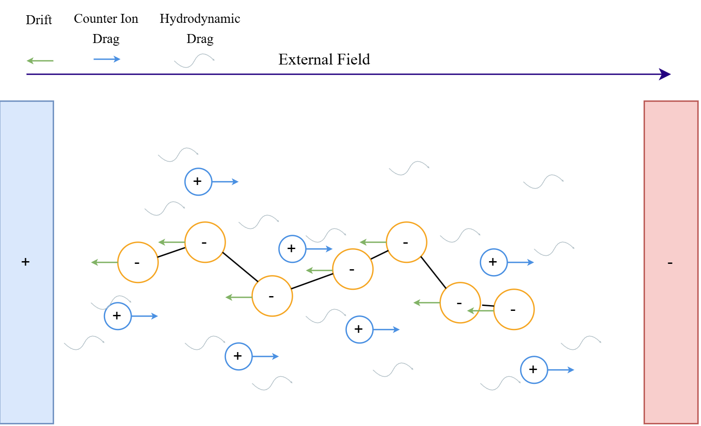

Free-Solution Electrophoresis
Electrophoretic mobility is defined as the steady-state drift velocity per unit electric field:$$\mu = \frac{v_{\text{drift}}}{E}$$ We have 3 driving effects:
- Direct electrostatic driving force: $\mathbf{F}_{\text{el}} = Q_{\text{eff}}\mathbf{E}$
- Hydrodynamic drag from the solvent
- Electro-osmotic retardation: Drag from the oppositely charged counterions against solvent molecules
